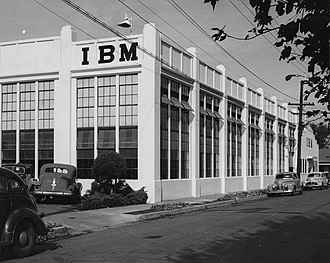
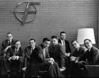

Pre 1956
Stanford University
Served as military base
Stanford University
Served as military base
William Shockley founded the transistor, the most important invention in modern computing
Due to Shockley's difficult treatment towards his employees, 8 of them decided to quit his company and founded their own company, Fairchild Semiconductors.
After some time, those employees would dispand again and found other notable companies, like Intel.
 Rise of computer culture, more modern technological companies started to rise
Silicon Valley is now the center of technology development, and support newer ones along the way